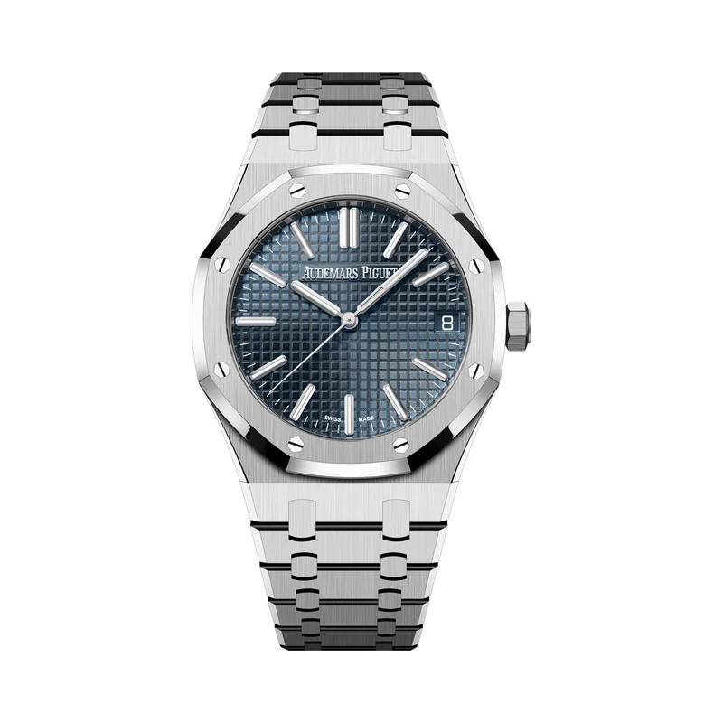

Encyclopedia / Audemars Piguet / Royal Oak Selfwinding

No real new deal right now · checked Oct 19, 2026, 10:06 PM ET
$60,000 – $75,000 pre-owned street range
15510ST.OO.1320ST.06 (blue) (median ~$65,000)
No credible new discount: AP sells through its own boutiques, and WatchMaxx showed this ref out of stock. Range = middle 80% of Chrono24 asking prices on the first results page (39 listings), used and unworn mixed.
Price comparison: fixed-price listings
| Store | Condition | Box & papers | Asking price | Link | Checked |
|---|---|---|---|---|---|
| Chrono24 marketplace seller | unworn | Not stated | $63,275 | View | Oct 19, 2026 |
| Jomashop | new | Yes* | $66,500 | View | Oct 19, 2026 |
Fixed-price (buy-now) asking prices in USD for ref. 15510ST.OO.1320ST.06, cheapest new and cheapest pre-owned with box and papers per store, sorted low to high and checked Oct 19, 2026 (ET). Buy-now listings only. Pre-owned listings are shown only when the listing states box and papers. * New from a grey-market dealer: comes boxed, but the warranty card may be the dealer's rather than the brand's. Chrono24 rows are individual third-party marketplace sellers. Prices change fast; confirm with the store.
What it really costs
| Market | Price | Source |
|---|---|---|
| Audemars Piguet US price | $31,900 | audemarspiguet.com |
| Grey-market new | No credible discount found (WatchMaxx: out of stock) | watchmaxx.com |
| Pre-owned 15510ST (blue) | about $60,000 – $75,000 (median ~$65,000) | Chrono24 |
All prices in USD, checked Oct 19, 2026 (ET). Pre-owned ranges are the middle 80% of asking prices on the first Chrono24 results page for that ref (about 60 listings, used and some unworn), fixed-price listings only. Grey-market = brand-new from a non-authorized dealer.
Buying guide
Key references
| Ref. | What it is | US retail |
|---|---|---|
| 15510ST.OO.1320ST.06 | 41 mm steel, blue 'Bleu Nuit, Nuage 50' Grande Tapisserie dial, steel bracelet | $31,900 |
Which one I'd pick
Blue vs other dials: the blue .06 is the one that echoes the 1972 original and is the most liquid on resale. If you only buy one Royal Oak, it's the one I'd pick.
Retail vs pre-owned: buying at $31,900 means a boutique relationship. Pre-owned is available today at roughly twice that.
What to check before you buy
- Box and papers: an AP warranty card and full set matter a lot at this price.
- Bracelet stretch and polishing: the sharp bevels are part of the design. Over-polished cases and bracelets lose value.
- Fakes and red flags: the Royal Oak is heavily counterfeited. Buy from an established dealer and get it authenticated.
Alternatives worth a look
- Patek Philippe Nautilus: Genta's other integrated-bracelet icon. (41 mm white gold (5811/1G), Calibre 26-330 S C, retail $82,021 (5811/1G-001))
- Vacheron Constantin Overseas: The third of the 'holy trinity' sports watches, closer to retail. (41 mm stainless steel, Calibre 5100, retail $29,200 (4520V/210A-B128))
- Tissot PRX Powermatic 80: The integrated-bracelet look for under $1,000. (40 mm stainless steel, Powermatic 80, retail $850 (40 mm))
History
Audemars Piguet launched the Royal Oak in 1972. It was designed by Gérald Genta, who later also designed Patek Philippe's Nautilus.
Its octagonal bezel with eight screws, integrated steel bracelet and 'Tapisserie' dial are still the core of the design. The same designer's Nautilus followed at Patek Philippe in 1976.
The 15510ST is the current 41 mm Royal Oak Selfwinding. AP says it combines the collection's latest ergonomic design with a 'Grande Tapisserie' dial in the 'Bleu Nuit, Nuage 50' shade of the original 1972 model.
Specifications
| Brand | Audemars Piguet |
|---|---|
| Model | Royal Oak Selfwinding |
| Key references | 15510ST.OO.1320ST.06 |
| Launch year | 1972 |
| Case | 41 mm stainless steel (15510ST) |
| Thickness | 10.5 mm |
| Dial | 'Grande Tapisserie' pattern, 'Bleu Nuit, Nuage 50' |
| Movement | Calibre 4302, automatic (15510ST) |
| Power reserve | 70 hours (15510ST) |
| Water resistance | 50 m |
| Approx. US retail (Oct 2026) | $31,900 (15510ST.OO.1320ST.06, AP US site) |
Specs from the brand's official product page for the main reference. Retail prices are list prices, not market value, and change often.
Highlights
- Octagonal bezel with eight screws
- Grande Tapisserie dial
- Integrated bracelet
FAQ
How much is an Audemars Piguet Royal Oak 15510ST?
AP's US site lists the blue 15510ST.OO.1320ST.06 at $31,900 (checked Oct 19, 2026). On Chrono24, the middle of the market was asking about $60,000 to $75,000.
Who designed the Royal Oak?
Gérald Genta. The Royal Oak launched in 1972.
How thick is the Royal Oak 15510ST?
10.5 mm, with a 41 mm case and 50 m water resistance, per AP.
Why is the Royal Oak so expensive pre-owned?
Supply at retail is limited, so buyers who want one now pay the secondary-market price, which on Oct 19, 2026 was about double retail.
Want this watch for less?
Every week I hunt down genuine deals on watches like the Royal Oak Selfwinding and send the best ones. Free, one email a week.
Get the free weekly issuePrices and availability last checked Oct 19, 2026. No affiliate links: I don't earn anything if you buy. Sources are listed in our research notes and linked above.